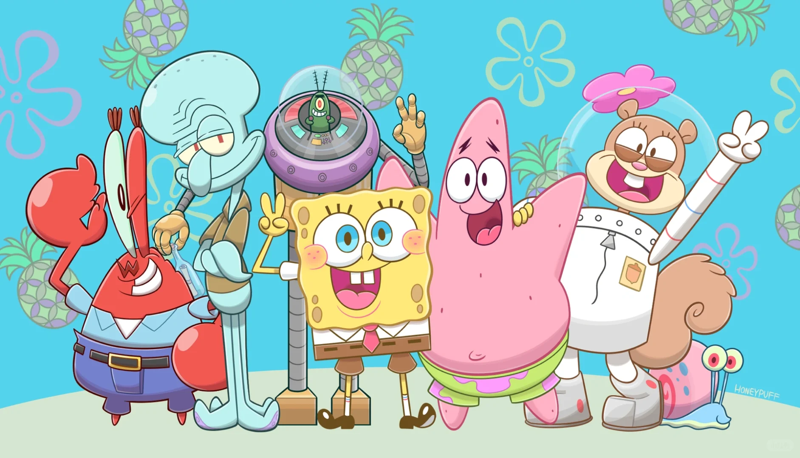
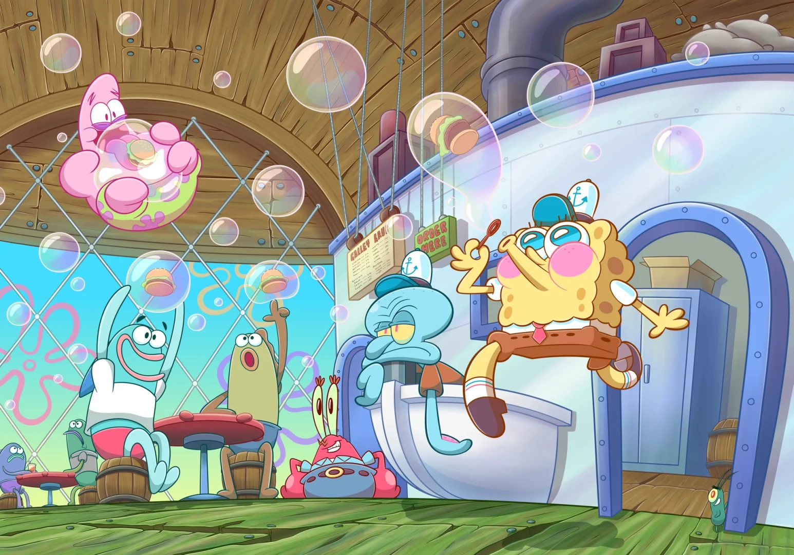

Project Introduction~
SpongeBob SquarePants is an American animated comedy created by Stephen Hillenburg, with directors including Sherman Chen, Walt Dohrn, Sam Henderson, Paul Tibbitt, and Walt Dorn. The series features voice actors such as Tom Kenny, Bill Fagerbakke, and Roger Bumpass. It first premiered on Nickelodeon on July 17, 1999.
The plot of SpongeBob SquarePants primarily revolves around the main character, SpongeBob, and his good friends Patrick Star, neighbor Squidward, and boss Mr. Krabs, set in a city called Bikini Bottom at the bottom of the Pacific Ocean. On January 30, 2005, the show won the "Best TV Animation Production" award at the 32nd Annie Awards.
Aside from the regular cartoon settings and characters, the show occasionally features real-life objects or people. For example, David Hasselhoff, known for his roles in Baywatch and Knight Rider, appeared as himself in several episodes. However, the content of SpongeBob SquarePants is not focused on marine biology and often exaggerates or completely disregards scientific facts, such as underwater fires and showers. The show also frequently mocks refined art and Squidward's labor rights ideas.

